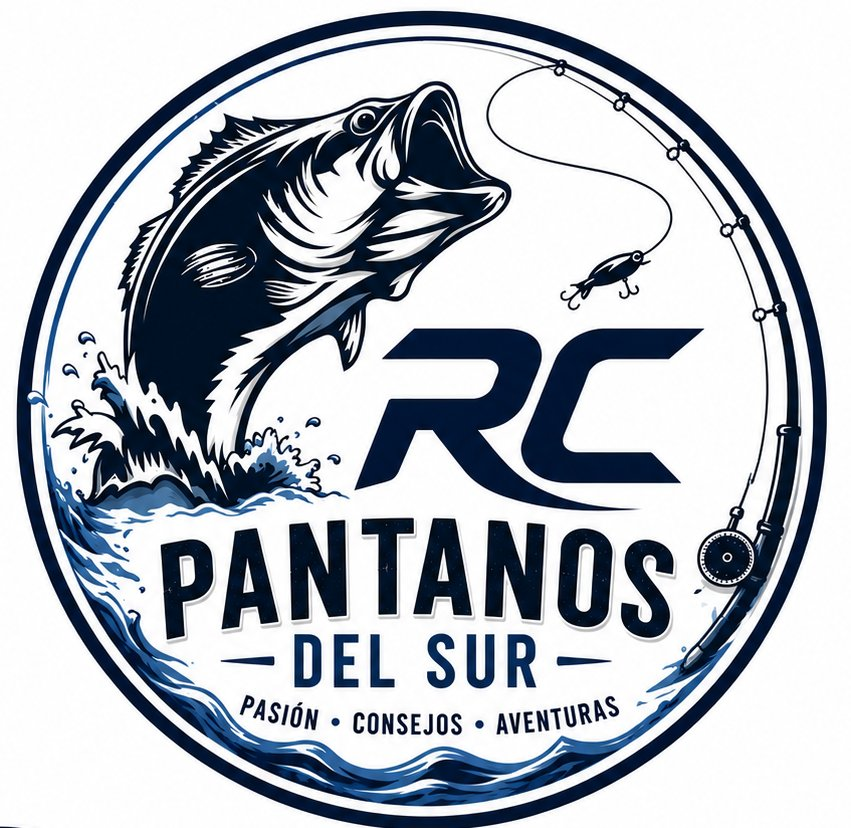

Últimas salidas
Somos tres hermanos del sur que cambiamos el sofá por el amanecer. Aquí contamos lo que pasa de verdad cuando te plantas delante de un pantano con una caña en la mano.
No siempre se pesca. Siempre se aprende.

Últimas salidas
No buscamos peces. Buscamos momentos.
Del diario de campo

Todo tiene un principio. El nuestro fue una mañana de octubre, niebla sobre el agua y un bass que no quería picar...

Los embalses del sur tienen sus caprichos. Aquí va lo que a nosotros nos ha funcionado cuando el bass no quiere saber nada...

Hay algo que pasa en los pantanos justo antes de que salga el sol que no se puede explicar bien con palabras, pero lo intentamos...
Spots de la zona

📍 Escalona, Valencia

📍 Beniarrés, Alicante

📍 Villajoyosa, Alicante

📍 Tous, Valencia

Quiénes somos
Nacimos en Norrköping, Suecia. De pequeños, nuestra familia hizo las maletas y nos trajo al sur de España — a Rojales, en la Vega Baja del Segura. Fue un cambio de mundo, y también el principio de todo.
Las primeras cañas las mojamos en el Mediterráneo. Guardamar, Torrevieja, el mar como primer maestro. Pero con el tiempo el horizonte se fue abriendo hacia el interior: los embalses, la montaña, el agua verde de los pantanos valencianos.
Escalona, Beniarrés, Amadorio, Tous... cada uno nos enseñó algo distinto. Este blog es nuestro diario de exploración. Tres hermanos, muchas madrugadas y la convicción de que la mejor parte de pescar nunca fue la captura.
Conocer nuestras aventurasLo que llevamos al agua
Sin patrocinios inventados. Solo lo que cabe en nuestra mochila.
Spinning y baitcasting para bass. Feeder para las sesiones nocturnas de carpa. Lo que hemos probado y lo que se ha quedado.
Soft plastics, topwater, crankbaits. La caja real, con los que han dado resultado en los embalses del sur valenciano.
Desde el chaleco hasta la linterna frontal. Todo lo que llevas encima cuando entras al monte antes del amanecer.
Cada embalse tiene algo que enseñar.